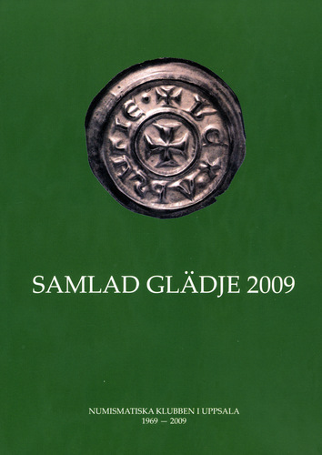

Program
Mötesreferat
Bli medlem
Historik
Stadgar
Samla mynt
Jubileumsbok
Jubileumsbok 2009
Jubileumsbok 2019
Småskrifter
Auktionskatalog
Länkar
Kontakt
Numismatiska klubben i Uppsala 1969-2009
|
Numismatiska klubben i Uppsala grundades 26 mars 1969. För att uppmärksamma 40-års jubileumet, har klubben utgivit en jubileumsbok. Boken, som är inbunden, omfattar 255 sidor och är rikt illustrerad i färg.
Boken kan beställas genom insättning av 250 kr på Numismatiska klubben i Uppsalas bankgiro 871-4578. Priset inkluderar försändelse inom Sverige. Boken kan även köpas på klubbens sammankomster för 200 kr. |
 |
|
Förord: (pdf) Kent Bengtsson: Ett kyrkfynd från Gråmanstorps kyrka (pdf) Jan-Olof Björk: 1 öre KM 1772 präglad på irreguljär plants (pdf) Per-Göran Carlsson: Den svenska myntmarknadens utveckling 1999-2009 (pdf) Curt Ekström: Från republik till kejsardöme - en dramatisk period i romarrikets historia återspeglad i mynten (pdf) Frédéric Elfver: Kung Johan Sverkerssons myntning - några reflektioner kring en spekulativ bildrekonstruktion (pdf) Monica Golabiewski Lannby: Kring Riksbankens första sedlar i färg - samt lite om de människor som använde dem (pdf) Bo Gunnarsson: Den gäckande kedja 105 - spåret av en vikingatida myntunion? (pdf) Christian Hamrin: Kvalitetsbedömning (pdf) Ragnar Hedlund: I Roms tjänst - det romerska Britannien och dess mynt (pdf) Cecilia von Heijne, Dan Carlberg och Ian Wiséhn: Berndt Kallenberg - myntsamlaren och donatorn från kristianstad (pdf) Bengt Hemmingsson: Ännu en 10 daler SM 1644? (pdf) Kjell Holmberg: KAROLVS REX S'G' - MONETA ABOENS' Karl Knutssons åboörtugar - typer, dateringar och några hypoteser (pdf) Martin Johansson: 1800-talets medaljkonst - en studie av eliter och ideal under ett föränderligt sekel (pdf) Eric Knutsson: Kung Carl XVI Gustafs 10-kronorsmynt 1991-2009. myntprägling och präglingsvarianter av "Guldtian" (pdf) Lars O. Lagerqvist: H. M. Konungens medaljsamling - och ett exempel (pdf) Nanouschka Myrberg: PAX PORTA NY. Gotländsk uttolkning av ett fridskoncept (pdf) Hendrik Mäkeler: Carl von Linné, pengarna och Uppsala universitets myntkabinett (pdf) Anders Nordin: En obestämd Uppsalaprägling (pdf) Sven-Erik Olsson: ångbåtshistoria på Fyrisån med inslag av numismatik (pdf) Dennis Pettersson: Något om Gustav Erikssons tidiga mynt och deras raritetsgrader (pdf) Anders Stam: Sena tiggarpolletter från Skyddsvärnet i Kopparbergs län (pdf) Werner Stensgård: Nödmynten och dess plakat (pdf) Torbjörn Sundquist: Elias Brenners tidigare utgåvor av Thesaurus nummorum. Svårkollationerade böcker (pdf) Magnus Wijk: Gunnar Ekström och Brandskatten (pdf) Eva Wiséhn: Hermes, Crescent, Fram och Nordstjernan - symboler för det cyklande folket i Cykelsala (pdf) Bilaga 1: Programpunkter (pdf) Bilaga 2: Myntdagar (pdf) Bilaga 3: Utgivna skrifter (pdf) Bilaga 4: Bilder (pdf) Bilaga 5: Författarpresentationer (pdf) | |